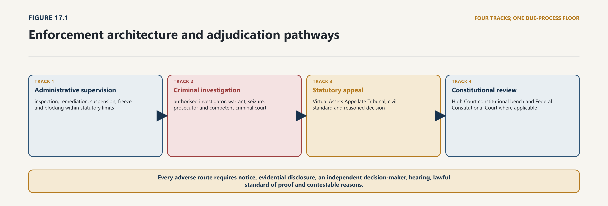
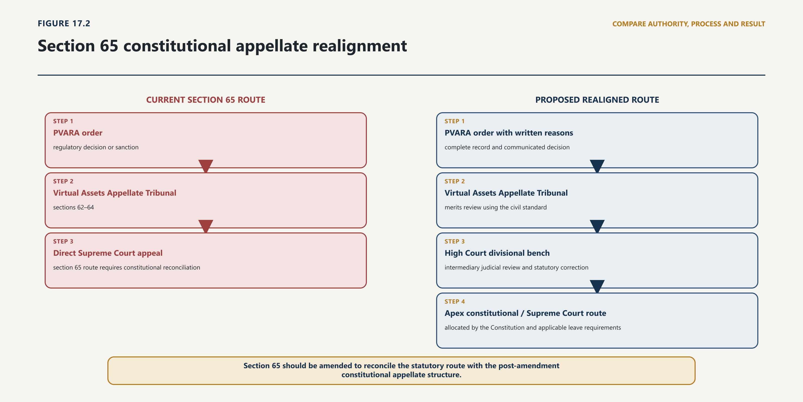

Chapter Seventeen · Part 4
Chapter 17 — Enforcement, Tribunal, Courts and Constitutional Remedies
17.1 The Enforcement Map
17.1.1 Administrative, civil and criminal pathways
17.1.2 Competence, sequencing and coordination
1
The Act’s enforcement structure begins before an offence. PVARA can examine whether an applicant remains fit and proper, whether a licensee complies with conditions and whether an issuer or service provider meets market-conduct, record, technology, AML/CFT and consumer duties. This preventive function is legitimate and necessary. International securities-regulatory standards likewise expect regulators to possess comprehensive inspection, investigation, surveillance and enforcement powers and to use them in a credible, proportionate and dissuasive manner. The standard, however, is effective lawful action, not maximum coercion.1

2
Every case should begin with classification. The intake officer should identify the regulated person, activity, asset and territory; the potentially breached provision; whether the matter is supervisory, administrative, criminal or mixed; the urgency; and the evidence needed. That classification fixes authority. A routine information request may rest on supervisory access. A compelled entry or search requires the criminal-procedure route supplied by section 57 and the Code of Criminal Procedure. A licence suspension requires the statutory licensing provision and its notice protections. A platform-blocking order requires section 61’s own grounds, reasons, communication and representation process. A suspected tax, cybercrime, fraud, AML or securities offence must be referred to the institution whose law confers that jurisdiction; PVARA’s subject knowledge does not expand its statutory competence.
3
The decision file should contain an authority sheet. It should identify the Act and subsection, the office or delegate authorised to act, any delegation instrument, the factual threshold, territorial basis, intended legal consequence, mandatory consultation, procedural safeguards and review route. Where more than one power could be used, the file should explain why the selected route fits the purpose and does not evade stronger safeguards attached to another route. An emergency freeze should not become a means of imposing an indefinite penalty without adjudication; an information request should not be drafted so broadly that it becomes a warrantless search.
4
The Act’s implementation has moved beyond the consultation-stage record. The Pakistan Virtual Asset Services Regulations, 2026 and Pakistan Virtual Asset Activity-Specific Regulations, 2026 are notified. Enforcement must therefore proceed from the Act, the notified instruments and any other legally applicable rules or directions, with status and temporal effect established from the controlling text rather than inferred from an obsolete consultation label.
5
Legality also requires institutional proof. The Act says that a Tribunal shall be established and allows the Federal Government to designate Special Courts, appoint a Special Prosecutor and authorise a PVARA investigating officer. Those are enabling or constitutive steps of different kinds. The Act alone does not prove that a particular person has been appointed, a court designated, rules prescribed or the Tribunal made capable of accepting a filing. Before action, the case owner should authenticate the current notification, appointment, delegation and procedural instrument. Where the public record is incomplete, the conclusion is that the record was not located in the bounded search, not that the institution certainly does not exist.
17.2 Inspection, Investigation and Information Powers
17.2.1 Entry, production, interviews and digital access
17.2.2 Necessity, privilege and procedural safeguards
6
The first enforcement objective should normally be compliance. Sections 19 to 23 permit PVARA to decide NOC, fitness and licensing questions and to refuse, suspend or revoke in specified circumstances. The legislation repeatedly uses written reasons, notice and an opportunity of hearing, but the exact protection varies by provision. The case record should therefore distinguish a supervisory observation, a required remediation plan, a proposed adverse action and a final order. Only the authorised decision-maker should cross from supervision into legal consequence.2
7
A graduated response can include a private supervisory letter, required corrective action, a public censure, a cease or remediate order, a financial penalty, suspension, revocation and disqualification. Section 59 also permits sanctions involving issuers and enables a court to order restitution or disgorgement. Proportionality requires an explicit account of seriousness, duration, intent or negligence where relevant, consumer or market harm, gain, concealment, cooperation, remediation, recurrence, financial capacity and systemic consequence. Comparable cases should be recorded so that discretion does not become arbitrary.
8
The sanction text itself needs correction. Section 59(3) appears to permit PVARA, through Regulations, to impose sanctions for violations of other applicable laws. Subordinate legislation cannot safely be used as an open-ended bridge into another regulator’s statute. The better construction is confined to consequences that the Act itself authorises for conduct relevant to PVARA’s mandate, without purporting to exercise another authority’s sanctioning power. If Parliament intends concurrent or referral-based enforcement, it should identify the other laws, competent body, trigger and coordination rule expressly. Section 59(4), which allows a fine up to twenty-five million rupees for any contravention, also sits uneasily with section 59(1)(c), under which maximum financial penalties are to be specified by rules. Final rules should not disguise that textual tension; an amendment should state the classes, maxima, aggregation rule and decision-maker clearly.3
9
Interim powers require stronger controls than ordinary supervision because they operate before final adjudication. Section 60 permits a suspension or freezing order for up to thirty days on systemic, financial-stability, market-integrity, consumer-protection, AML/CFT or public-interest grounds. It does not expressly state a prior-hearing rule, renewal power, early-review mechanism, compensation position or evidentiary threshold. Urgency may justify action without prior notice, but the file should record specific and current risk, why a less restrictive measure would fail, the assets or activity covered, duration, protected customer operations, communication, a rapid post-decision hearing and the conditions for discharge. No extension should be assumed from silence.
10
Section 61 is more structured. PVARA may direct blocking or removal where it has reasonable grounds concerning an unlawful or unauthorised service. It must record the reasons and legal basis in writing, communicate the order, require preservation of evidence, permit a representation within ten days and respond within fifteen days. A compliant order should identify the service and conduct precisely, distinguish blocking from evidentiary preservation, state the provider’s duties, avoid unrelated content or accounts, and give the statutory representation and Tribunal details. Technical intermediaries should not be forced to guess which domain, application, wallet, interface or functionality is covered.
11
Urgent measures and final sanctions should never be merged in drafting. The interim order protects the position pending a defined next step. The final order determines proved contravention after disclosure and hearing. Each needs its own evidence, reasons, duration and review route. If a criminal referral is also made, the administrative decision should say what evidence may lawfully be shared and avoid declarations that prejudge guilt.
17.3 Administrative Measures and Sanctions
17.3.1 Directions, suspension, cancellation and monetary penalties
17.3.2 Proportionality, reasons and publication
12
The Act creates a specialised criminal-investigation gate. Only a PVARA officer authorised for the purpose may investigate an offence under the Act. Section 57 requires a warrant from a competent court for search and seizure, then applies police and investigator powers concerning investigation, inquiry, search, seizure, arrest, attachment and confiscation. Cognizance is conditioned on a written report by the investigating officer. The Federal Government may appoint a Special Prosecutor, and Chapter XXII-A of the Code of Criminal Procedure applies to trial. These provisions connect the sector statute to ordinary criminal process; they do not displace the safeguards in that process.4
13
The Code supplies operational discipline. A warrant can specify and restrict the place and object of search. Entry into a closed place, presence of respectable witnesses, an inventory of things seized, participation by the occupant and delivery of a signed copy protect both evidentiary reliability and the person searched. An urgent police search under section 165 requires reasonable grounds recorded in writing and specification, so far as possible, of the thing sought; the general search protections apply. The investigation report under section 173 records the parties, accusation and case disposition and must be available to the accused in the manner prescribed. Where a special law does not name the trial court, section 29 supplies the ordinary allocation, while a valid designation under the special law may provide otherwise.5
14
Virtual assets add technical steps but do not erase these legal requirements. A search team may encounter a device, hardware wallet, seed phrase, exchange credential, cloud account, multisignature arrangement or smart-contract administrative key. Physical possession of a device is not necessarily control of the asset, and transfer of a token to a government-controlled address may itself be an on-chain transaction with legal and operational consequences. The warrant application should describe the data and control sought, explain nexus and necessity, and request only the authority required to preserve, image, access, restrain or transfer it.
15
The minimum digital evidence record is:
| Evidence event | Required record |
|---|---|
| identification | device, account, address, contract, token, network, custodian and source of attribution |
| legal authority | warrant or order, scope, time, place, officer and any condition or privilege protocol |
| acquisition | method, date and time, personnel, forensic image or export, hash or integrity value and tool version |
| asset restraint | transaction identifier, source and destination, signing authority, key ceremony, approvals and network fees |
| custody | every transfer, access, copy, analysis environment, storage location and person responsible |
| interpretation | assumptions, attribution method, clustering or analytics limitations, expert qualification and reproducible steps |
| disclosure | material supplied to defence or affected person, protected redactions, exculpatory material and later corrections |
| disposition | return, continued restraint, confiscation, restitution, liquidation or destruction authority and complete audit trail |
16
Pakistani evidence law recognises electronic records, automated-system output and expert opinion concerning the authenticity, integrity, functioning, programming and operation of information systems. A printout can qualify as primary evidence under the stated conditions; modern-device evidence may be received; and the Electronic Transactions Ordinance supplies rules concerning integrity, signatures and attribution. These provisions assist admissibility and attribution. They do not make a dashboard screenshot infallible or convert a vendor score into proof of ownership, knowledge or criminal intent.6
17
Investigators should preserve raw records before analysis; keep blockchain observations separate from off-chain identity assertions; document clock and network conditions; validate proprietary analytics through disclosed methodology where fairness permits; and preserve alternative explanations. Privileged, unrelated and personal material requires filtering and access control. Asset-handling arrangements should use segregated addresses, dual control, offline or appropriately secured key management, reconciliation, incident response and a judicially traceable disposition rule. A seizure that cannot later be proved, attributed or safely returned is not an effective seizure.
18
Section 57 contains a drafting defect that should not be ignored. Subsection (3) penalises refusal to provide information required under subsection (1), but subsection (1) concerns obtaining a search-and-seizure warrant rather than an information demand. Penal or coercive effect should not be built by repairing that cross-reference administratively. Parliament should identify the intended duty, person, form of request, protected grounds of refusal and consequence.
17.4 Offences, Prosecution and Asset Measures
17.4.1 Elements, mens rea and corporate responsibility
17.4.2 Seizure, freezing, confiscation and third-party rights
19
Section 54 criminalises specified conduct: wilful unlicensed VASP activity, prohibited initial virtual-asset offerings, wilful market abuse, knowing submission of false or misleading material, obstruction and wilful failure to comply with an order. Penalties differ for natural and legal persons and may be linked to imprisonment, a fixed fine, turnover or gain and avoided loss. The prosecution must plead and prove the elements of the particular offence. The offence label “market abuse” is not a substitute for proving the conduct and mental element that the enacted text and valid subordinate rules require.7
20
Strict construction is especially important where regulatory language becomes penal. The Supreme Court has restated that a provision carrying criminal or civil penal consequences must be construed strictly; reasonable ambiguity is resolved for the person exposed, and a penalty cannot be added by inference. That principle matters to undefined terms, the defective section 57 cross-reference, the scope of “obstruction,” and any attempt to use regulations to create an offence or penalty beyond the Act. Administrative guidance may explain expectations but cannot cure a missing element in a criminal offence.8
21
Corporate attribution requires equal care. Section 55 deems an officer or other responsible person guilty where a corporate offence occurred with consent or connivance or was attributable to neglect. Status alone should not be treated as guilt. The prosecution should identify the person’s function, authority, knowledge, act or omission, causal relationship and the particular consent, connivance or neglect alleged. Technical control, beneficial ownership, Board office, employment, key access and receipt of fees are relevant facts but are not interchangeable.
22
A single course of conduct can trigger supervision, restitution, an administrative penalty, licence action and criminal prosecution. That does not automatically violate Article 13, which protects against prosecution or punishment more than once for the same offence. The legal character, elements, purpose and consequence of each proceeding must be examined. Even where the constitutional bar is not engaged, fairness and proportionality require coordination. PVARA should prevent duplicated recovery, disclose related proceedings, keep compelled regulatory material within its lawful use limits, avoid adverse inference from exercise of a protected right and sequence hearings where one proceeding could prejudice another.9
23
The enforcement plan should specify the consequence sought on each track: remediation protects users and systems; restitution restores loss; disgorgement removes gain; a civil or administrative penalty punishes and deters; licence action protects the regulated perimeter; confiscation addresses offence-linked property through lawful process; and imprisonment follows criminal conviction. Naming the purpose exposes overlap and helps a reviewing body assess necessity and proportionality.
17.5 The Tribunal
17.5.1 Constitution, jurisdiction and procedure
17.5.2 Independence, expertise and institutional reality
24
Article 10A applies fair-trial and due-process discipline to civil rights and obligations as well as criminal accusations. The Act contains useful procedural elements, but they are distributed unevenly. A unified enforcement procedure should therefore be prescribed for adverse administrative decisions without diluting any stronger protection in the Act.10
25
The notice should identify the decision-maker and delegation, facts alleged, statutory provisions, proposed findings and sanctions, material relied upon, response period, hearing form, confidentiality process and potential parallel referral. Disclosure should be sufficient to answer the case. Where information must be withheld for lawful reasons, the decision-maker should consider a gist, redaction, confidentiality ring, independent reviewer or other measure that preserves meaningful response. A person cannot answer an undisclosed theory.
26
The decision-maker should be institutionally and personally competent. Staff who investigated may present the case but should not secretly decide it. Conflicts must be declared; recusal and replacement should be recorded. The affected person should be able to submit documents, contest attribution and methodology, identify witnesses or experts and address sanction. Oral hearing need not be universal, but refusal should be reasoned where credibility, complex expert dispute or severe consequence makes it material.
27
The standard of proof must match the proceeding. Section 64 expressly directs the Tribunal to decide on the civil standard. The Act does not thereby reduce the criminal standard at trial. Administrative findings should be made on the standard applicable under the governing law, with the gravity of the allegation reflected in the quality of evidence required. A risk threshold sufficient for an interim protective order is not the final proof required for a penalty.
28
Reasons are an enforcement control, not ceremonial drafting. A final order should set out jurisdiction, procedural history, issues, evidence accepted and rejected, findings on each element, response to material submissions, sanction analysis, effective date, compliance steps, publication treatment and appeal route. Machine-assisted analytics should be identified by role and limitation; the legal conclusion must remain attributable to the authorised public decision-maker.
29
The record should be capable of review without reconstruction. It should include intake, authority, delegation, communications, evidence log, disclosure, submissions, hearing record, consultations, conflicts, drafts and approvals, final reasons, service, implementation and later appeal. Comparable UK financial-services legislation illustrates a warning-notice and decision-notice sequence, access to the material on which the regulator relied and reference to an independent tribunal. That is a design comparator, not Pakistani law; Pakistan’s procedure must be grounded in the Act, Constitution and valid rules.11
17.6 Courts and Article 175F
17.6.1 Constitutional court architecture
17.6.2 Consistent treatment across statute, appeal and judicial review
30
Section 62 says that the Federal Government shall establish a Virtual Assets Appellate Tribunal. Its proposed composition is a retired High Court judge, or an advocate with at least ten years’ practice, together with members having technology and financial expertise. Appointment is for three years, subject to an age limit of sixty. Sections 63 and 64 allow a VASP, licensee or other person aggrieved by a PVARA order to appeal within thirty days after communication. The Tribunal is to use summary procedure, apply the civil standard, possess stated civil-court powers and decide within three months; its decisions are deemed civil decrees.12

31
This is a substantial adjudicatory mandate, but the constitutive text is incomplete. It does not clearly provide the number of members, whether the legal member chairs, single-member or bench allocation, qualifications for technical members, independent appointment process, salaries, removal grounds, recusal, vacancies, secretariat, budget, registry, territorial sittings, accessibility, publication or protection of decisional independence. “Technology” and “financial” expertise are not self-testing categories. Rules should require demonstrable experience relevant to digital systems, financial markets, evidence or regulation, while protecting the Tribunal from capture by recent regulated interests.
32
Jurisdiction also needs precision. Section 62’s court bar refers to legal disputes falling within the Tribunal’s jurisdiction, while section 63 permits an appeal by any aggrieved VASP, licensee or other person against a PVARA order. “Order,” “aggrieved” and “legal dispute” are broad. The text does not say whether recommendations, supervisory letters, interim measures, refusals to act, complaints decisions, cost decisions or procedural directions are appealable. It also does not explain the interaction between a section 61 representation and a section 63 appeal. Rules cannot narrow a statutory right contrary to the Act, but they can define filing categories and require the registry to record jurisdictional objections for decision by the Tribunal.
33
The duplicated thirty-day language in sections 63 and 64 should be consolidated. The Act supplies no express power to condone delay, although communication, incapacity, fraud or inaccessible systems may make strict calculation unjust. It does not state whether filing suspends the order, whether the Tribunal can grant a stay or other interim relief, or whether it may affirm, vary, set aside or remand. Treating decisions as civil decrees supports enforceability, but it does not answer the full remedial question.
34
Section 64 gives the Tribunal the same powers as a civil court under the Code of Civil Procedure concerning attendance, document production, affidavits, commissions and review. One construction is that this incorporation, combined with decree status and the Tribunal’s adjudicatory purpose, permits necessary interlocutory control. The Code itself contains supplemental powers, inherent powers and temporary-injunction procedures. The rival construction is that a statutory tribunal has only the powers expressly conferred, and that the listed matters define rather than expand the incorporation. Because a freeze, suspension or blocking order may cause irreversible harm before a three-month decision, litigants should not have to discover the answer through emergency litigation. Parliament should confer express powers to stay, preserve, secure, expedite, vary and impose conditions, with reasons and a public-interest test.13
35
The appellate process should contain at least: prescribed form and electronic filing; proof and date of communication; condonation on sufficient cause; complete record transmission by PVARA; notice and service; confidentiality and privilege procedure; intervention where directly affected; evidence and expert rules; interim relief; costs; recusal; hearing access; correction and review limited to defined grounds; enforceable relief; and publication of reasoned decisions with necessary redaction. The three-month period should trigger case management and an explanation for delay, not automatic allowance or dismissal.
36
Domestic comparators show that Parliament can specify this architecture. The SECP Act provides an internal Appellate Bench, excludes participation by the original decision-maker, gives the Court power to accept, set aside or vary and addresses stay. The Competition Act creates an internal appellate bench, a specialist Competition Appellate Tribunal with judicial and technical membership, a decision period and a direct Supreme Court appeal. These analogies do not decide the validity or best design of the Virtual Assets Tribunal, but they show the omissions are curable in legislative text rather than left to implication.14
37
As at the evidence cut-off, no official notification establishing the Tribunal, appointment of members, Tribunal rules, registry notice or published docket was located in the bounded project corpus, PVARA regulatory pages, Cabinet material and official-domain searches undertaken for this chapter. Nor were a section 54(8) Special Court designation, section 58 Special Prosecutor appointment or section 56 investigator authorisation located in that bounded search. This is a verification gap, not proof of non-existence. Until the instruments are authenticated, a practitioner should not advise that a filing route is operational merely because the Act uses “shall.”15
17.7 Due Process and Fundamental Rights
17.7.1 Notice, hearing, reasons and equality
17.7.2 Privacy, property, expression and business rights
38
Section 65 states that a person aggrieved by a Tribunal decision may appeal to the Supreme Court within thirty days in the prescribed manner. That route must now be analysed under the Constitution as amended by the Twenty-Seventh Amendment, not under the former judicature text. Article 184 has been omitted. A Federal Constitutional Court of Pakistan now exists under Articles 175B to 175L. Article 175F allocates specified appeals from High Courts to that Court, including Article 199 matters with leave. Article 185, subject to Article 175F, continues Supreme Court appellate jurisdiction in terms framed around judgments, decrees, final orders or sentences of a High Court. Article 212 separately authorises administrative courts or tribunals for its listed service, governmental-tort and enemy-property categories and supplies a direct Supreme Court route for those tribunals. The Virtual Assets Tribunal does not fall within those Article 212 categories merely because federal legislative competence extends to administrative tribunals for federal subjects.16
39
There are competing constructions of section 65.
40
The defence of validity begins with Article 175(2): a court has jurisdiction conferred by the Constitution or by or under law. Parliament enacted section 65. Pakistani legislation is not unfamiliar with a direct statutory appeal from a specialist tribunal to the Supreme Court. Section 44 of the Competition Act does so, and the Supreme Court has in fact exercised that route, including in M/s Options International v Competition Commission of Pakistan. The Supreme Court has also stated in another context that conferral of jurisdiction is legislative in character and that a court cannot create or enlarge jurisdiction for itself. Further, the majority in Raja Amer Khan v Federation upheld Parliament’s prospective appeal provision in the Supreme Court (Practice and Procedure) Act 2023, while invalidating its retrospective component. These authorities make a categorical proposition that Parliament can never confer an additional appellate route on the Supreme Court untenable.17
41
The constitutional objection rests on structure and specificity. Current Article 185 describes Supreme Court appeals from High Courts and expressly operates subject to Article 175F. Where the Constitution intends a direct appeal from a tribunal, Article 212(3) says so for a defined class. Section 65 was enacted after the Twenty-Seventh Amendment and creates a direct route from a new regulatory tribunal without a High Court stage, leave requirement or question-of-law filter. The Competition Act’s older route and its exercise establish institutional practice, but they do not finally determine how a post-amendment provision should be reconciled with the revised constitutional text. Raja Amer Khan arose in the materially different setting of an intra-court appeal from the then Article 184(3) jurisdiction and cannot be treated as a complete answer.
42
The correct present conclusion is therefore calibrated: section 65 is legally contestable, and its validity and scope are not demonstrated as settled by the sources reviewed for this chapter. It should not be described as clearly void; it should equally not be assumed immune from constitutional objection. Article 187 cannot cure the problem because it facilitates complete justice only in a case already within jurisdiction.
43
Even if section 65 is upheld, its design is weak. It sends every qualifying Tribunal appeal directly to the country’s apex non-constitutional court without requiring leave or a substantial question of law. It deprives the system of an intermediate High Court record and correction stage, burdens the Supreme Court with technical and potentially factual disputes, and leaves the relationship with parallel Article 199 review unclear. The “prescribed manner” cannot resolve a constitutional allocation question, and no final prescribed appellate procedure was located for this chapter.
44
The safer amendment is to route a Tribunal appeal to the relevant High Court on a question of law, with express powers to affirm, vary, set aside and remand. A constitutional challenge or judicial-review claim would proceed under Article 199 before the competent constitutional bench where Article 202A operates; an appeal from that judgment would go to the Federal Constitutional Court under Article 175F when its conditions are satisfied. Any later Supreme Court route would operate under Article 185 as constitutionally applicable. If Parliament retains direct Supreme Court appeal, it should at minimum require leave and a material question of law, prescribe record and interim-relief rules, and state that constitutional review remains distinct. Judicial determination or a constitutional amendment may still be needed to settle the underlying competence objection.18
17.8 Evidence and Burden
17.8.1 Official records, expert proof and digital attribution
17.8.2 Presumptions, standards and contestability
45
The Tribunal is a statutory appellate body; Article 199 is a constitutional control on unlawful public power. The two are not interchangeable. Article 199 authorises the High Court, on application by an aggrieved person and where no other adequate remedy is provided by law, to restrain unlawful action, require performance of legal duties, declare an act without lawful authority and enforce fundamental rights. Article 199(2) states that the right to move a High Court for enforcement of fundamental rights is not to be abridged. Under current Article 202A, where the Article has been brought into force through the constitutionally required resolution, writ jurisdiction belongs to High Court constitutional benches. The Federal Constitutional Court has already applied the post-amendment route to Article 199 matters transferred from the Supreme Court under Article 175F.19
46
The ordinary rule is disciplined exhaustion. A person should not bypass a capable statutory appeal merely because Article 199 might offer a broader vocabulary. The Tribunal can correct error within jurisdiction, assess the record and supply a reasoned decision. Supreme Court authority repeatedly warns that constitutional or inherent jurisdiction is not a substitute for statutory remedies. Exhaustion protects institutional order and produces a record for later review.20
47
But adequacy is practical and legal, not nominal. A remedy may be inadequate where the Tribunal has not been established or cannot accept a filing; where the challenged actor lacked jurisdiction; where an action directly infringes a fundamental right; where the statutory body cannot grant the relief needed; or where irreparable harm will occur before the remedy can operate. The application must plead the basis rather than recite an exception. Delay, disputed facts, alternative remedy, territorial connection, standing and clean hands remain relevant to discretionary relief.
48
Section 62’s bar on courts entertaining legal disputes within Tribunal jurisdiction should be read in that constitutional setting. It can allocate ordinary statutory disputes away from civil courts. It cannot by ordinary legislation extinguish the High Court’s constitutional jurisdiction. Nor does the Tribunal become an Article 212 tribunal by analogy. At the same time, preserving Article 199 does not authorise routine parallel appeals. The High Court should be given the exact PVARA order, record, statutory remedy status, urgency and relief sought so that it can distinguish appellate disagreement from jurisdictional or constitutional failure.21
49
Remedy should be fitted to defect. Lack of authority may justify a declaration and setting aside. Denial of hearing may require remand to a differently constituted decision-maker. An unlawful freeze may require variation, release or an expedited hearing. A defective rule may require constitutional or ultra vires analysis. Damages are not automatic upon public-law invalidity and should be pursued through a legally available cause of action and competent forum. Interim relief should preserve rather than decide the case and must account for customer assets, market integrity, ongoing investigation and third-party interests.
17.9 Judicial Review and Constitutional Remedies
17.9.1 Jurisdictional error, legality and proportionality
17.9.2 Public-interest litigation and institutional restraint
50
Regulatory enforcement is not a complete compensation system. A customer may have contractual, tortious, trust, fiduciary, property, company, insolvency or consumer claims against a service provider or controlling persons. The forum and remedy depend on governing law, territorial and pecuniary jurisdiction, the parties and the relief sought. PVARA’s section 45 complaints process requires a VASP to maintain internal procedures and allows PVARA to establish or recognise an independent redress scheme for claims below a prescribed threshold. A complaint scheme can offer accessible correction or compensation within its authority; it does not silently exclude court, Tribunal or constitutional remedies unless valid law says so.22
51
Consumer law is territorially fragmented and should not be generalised from one enactment. The Islamabad Consumers Protection Act, for example, provides complaint, hearing, compensation and High Court appeal mechanisms within its own scope. Other provinces have their own texts and institutions. A virtual-asset claimant must establish that the transaction, person, service and territory fall within the applicable regime. The existence of PVARA regulation does not itself answer whether an investor, trader, business user or recipient is a “consumer” under the relevant law.23
52
Criminal proceedings serve public prosecution and punishment; they do not necessarily restore the claimant’s complete loss. Restitution or disgorgement under section 59 requires the stated judicial route. Civil preservation may be needed to prevent dissipation, but it must be sought from a court or tribunal having jurisdiction. Insolvency can alter individual enforcement and require collective claims. Corporate remedies may address directors, oppression, misfeasance or winding up under separate law. The claimant’s remedy map should identify defendant, cause of action, property or debt, limitation, evidence, interim protection, enforcement prospects and interaction with regulatory custody.
53
Arbitration may govern a contractual dispute if there is a valid agreement and the subject is arbitrable. It cannot confer criminal, public-law or regulatory jurisdiction on an arbitrator, bind a non-party without a legal basis or prevent a regulator from exercising statutory power. Terms requiring foreign arbitration, digital-only notice or inaccessible fees should be analysed for incorporation, consent and mandatory-law limits. Courts may still be needed for interim measures, evidence, recognition or enforcement according to applicable law.
17.10 Customer and Market Remedies
17.10.1 Complaints, compensation and restitution
17.10.2 Collective loss, insolvency and enforcement coordination
54
Cross-border supervision and criminal assistance must remain separate. PVARA may exchange regulatory information through a lawful cooperation arrangement and make referrals. Coercive production, search, freezing, confiscation and enforcement of a foreign fine operate through the Mutual Legal Assistance (Criminal Matters) Act 2020, its central authority and courts. A supervisory memorandum cannot substitute for that statutory chain.24
55
The MLA Act supplies concrete safeguards. A foreign freezing or seizure request goes through the central authority and a court; affected persons receive an opportunity of hearing under the statutory test. Foreign confiscation requires notice and permits objection. Foreign fines are judicially enforced subject to stated conditions. Electronic data may be urgently preserved, but the preservation order lapses if the production request is not received within forty-five days. A court-authorised search can permit access, seizure, copying, maintenance of integrity and rendering data inaccessible, with a right to object under the provision.
56
Virtual assets require requests to be technically executable. A request should identify network, asset, address, transaction, custodian, person, time range and evidential link; distinguish preservation from transfer; state whether private keys, account records or beneficial-ownership material are sought; and provide the dual-criminality and proceeding information required by law. Volatility is not authority to skip authentication, notice or judicial approval. If rapid action is needed, a preservation request should be followed by the complete production or restraint process within the statutory period.
57
Asset recovery also needs disposition planning. A frozen token can fork, migrate, generate rewards, become subject to an exploit or require network fees. The order should allocate responsibility for custody, conversion risk, income, technical changes, valuation, challenge and return. Sale before final determination requires express authority and a reasoned necessity assessment. Confiscation, victim restitution and regulatory disgorgement must be reconciled so that the same asset is not promised to several destinations.
Access to Justice, Publication and Adjudicatory Capacity
58
An enforcement system is not accessible merely because it has an email address. Users need authenticated orders, service in a usable form, clear deadlines, affordable filing, disability and language accommodation, secure electronic submission, case tracking, access to the non-confidential record and a human route for urgent failures. A VASP should give a customer a complaint reference and explain whether it is internal redress, PVARA complaint, regulatory report or statutory appeal.
59
PVARA’s public complaints page states service expectations for acknowledgement and investigation. Those commitments are useful administrative standards, but they do not create the Tribunal, extend statutory limitation or prove a binding remedy. The page and every decision notice should distinguish service handling from adjudication and identify the governing instrument.25
60
Published decisions are part of legality. PVARA should publish final enforcement outcomes and the Tribunal should publish reasoned decisions, with redaction for personal data, protected intelligence, security and legitimate confidentiality. Publication should identify the provision, material facts, issue, reasoning, outcome and date. A searchable precedent register improves consistency, allows market participants to correct conduct and exposes whether comparable cases receive comparable sanctions. It should also record withdrawals, settlements, remands, stays and later reversal so that an obsolete order is not presented as current authority.
61
Capacity must match subject matter. Judges and members do not need to become software engineers, but the institution needs independent technical assistance, reliable evidence presentation and the ability to test expert claims. Registries need to recognise urgent asset-restraint and platform-blocking cases. Members need conflict rules for token holdings, regulated clients and recent employment. Translators and accessible explanations may be necessary where customers cannot understand transaction or wallet records. Legal aid and representative actions should be examined for small claims that are individually uneconomic but collectively material.
Corrective Adjudicatory Package
62
The enforcement framework can be made operational through one coordinated package, but each component must be issued by the authority competent to make it.
63
First, amend the Act. Correct section 57’s internal cross-reference; confine section 59 to sanctions authorised by primary law; reconcile penalty maxima; add post-decision review for section 60; define appealable order and Tribunal remedies; permit condonation; confer express stay, preservation and interim powers; state composition, independence, appointment, removal, remuneration, registry and publication rules; and replace or constitutionally clarify section 65. The preferred appellate chain is Tribunal, High Court on a question of law, and thereafter the constitutionally applicable apex route, while preserving Article 199 review.
64
Second, establish and authenticate institutions. Publish the Tribunal notification, appointments, service terms, registry details and procedural rules. Authenticate Special Court designation, Special Prosecutor appointment and investigator authorisations before cases depend on them. A public status page should distinguish established, appointed, operational and accepting filings.
65
Third, prescribe a single enforcement procedure. It should govern classification, delegation, notice, disclosure, confidentiality, hearing, evidence, experts, reasons, sanction methodology, service, publication and record transfer. Separate schedules should address urgent orders, digital evidence, asset custody, parallel proceedings and cross-border referrals.
66
Fourth, build a complete remedy notice. Every final or interim PVARA order should state its legal basis, effective time, compliance duty, representation or reconsideration process, appeal forum, deadline, filing address, stay position and the distinction between statutory appeal and constitutional review. The Tribunal should provide the same clarity for any further route.
67
Fifth, test the chain before scale. A simulation should begin with a consumer complaint and suspicious transaction, move through supervision, urgent preservation, warrant, digital seizure, administrative hearing, parallel prosecution, Tribunal appeal and constitutional challenge. The test should verify every decision-maker, form, service event, clock, evidence transfer, custody control, conflict, reason and remedy. A failure should result in a corrected instrument or process, not an informal workaround.
68
The resulting remedy map is deliberately plural:
| Grievance | Primary route | What the route can decide | What it should not be assumed to decide |
|---|---|---|---|
| internal service or account error | VASP complaint procedure | correction, explanation and provider-level redress | validity of PVARA action or criminal guilt |
| PVARA regulatory order | Tribunal, once lawfully established and operational | statutory merits and civil-standard appellate issues within jurisdiction | constitutional extinction of Article 199 |
| unlawful public power or fundamental-right claim | High Court under Article 199, subject to adequacy and procedural rules | jurisdiction, legality and constitutional remedy | routine merits appeal where adequate statutory remedy exists |
| offence under the Act | authorised investigation, prosecutor and competent criminal court | criminal liability and sentence | private compensation beyond lawful powers |
| customer loss or proprietary claim | competent civil, consumer, company, insolvency or arbitral forum | private right and available relief | exercise of PVARA’s public powers |
| foreign evidence or restraint | MLA central authority and court | authenticated cross-border coercive assistance | informal regulator-to-regulator coercion |
69
Pakistan’s virtual-asset enforcement architecture is therefore neither empty nor complete. The Act supplies serious supervisory, coercive, adjudicatory and remedial building blocks. It also leaves material questions of institutional constitution, interim protection, penalty design, Tribunal independence and apex-court routing unresolved. The constitutional amendments make accuracy about the current courts indispensable: Article 184 is no longer the operative route; Article 199 review sits within the High Court constitutional-bench design where brought into force; and constitutional appeals now engage the Federal Constitutional Court under Article 175F.
70
The governing discipline is simple to state and demanding to implement: no sanction without primary authority, no search without the required judicial process, no digital evidence without integrity and attribution, no urgent order without a rapid path to contest it, no Tribunal by statutory assumption, and no appellate route described as settled where the constitutional text leaves a serious contest. Enforcement earns legitimacy when every exercise of power can be traced from lawful trigger to evidence, reasons, remedy and responsible institution.26
Chapter 17 Conclusion and Standalone Contribution
71
Enforcement completes the regulatory order only when coercive power is matched by jurisdiction, evidence, fair procedure and an effective remedy. Inspection and interim protection, administrative sanction, criminal prosecution and customer recovery serve different purposes and require different legal predicates and burdens.
72
The Tribunal and courts are therefore part of the architecture of legality, not obstacles external to it. Pakistan's regime needs clear appellate routes consistent with the current constitutional text, reasoned decisions, preserved records and remedies capable of protecting customers during investigation, failure and wind-down. A sanction without review or practical redress is not a complete enforcement system.
73
Independent-use note. This paper is Chapter 17 of Code, Law, and Capital: Digital Assets, Legal Authority and Pakistan's Regulatory Order by Khurram Chughtai. It states the law and evidence to 21 August 2026 and should be cited with its chapter title and version.
Chapter 17 Selected Authorities and Notes
Footnotes
- ↑ International Organization of Securities Commissions, Objectives and Principles of Securities Regulation <https://www.iosco.org/library/pubdocs/pdf/IOSCOPD561.pdf>, Principles 10–12. This is a comparative regulatory standard, not a source of Pakistani statutory power.
- ↑ Virtual Assets Act 2026 (Act No XIII of 2026) (‘VAA’), ss 19–23, including written reasons and notice or hearing protections attached to the specified decisions.
- ↑ VAA (n 2), ss 59–61. The discussion identifies internal textual tensions and a narrow construction; it does not treat regulations as capable of enlarging primary statutory power.
- ↑ VAA (n 2), ss 54 and 56–58; Code of Criminal Procedure 1898, s 29 and Chapter XXII-A.
- ↑ Code of Criminal Procedure 1898, ss 96–97, 101–103, 165, 173 and 550. The applicable warrant, arrest, bail, remand, trial and appeal rules must be determined for the actual offence and designated forum.
- ↑ Qanun-e-Shahadat Order 1984, arts 46-A, 59, 73, 78-A and 164; Electronic Transactions Ordinance 2002, ss 3–9, 13 and 29 and Schedule. Automated-system statements may be attributed to the person exercising power or control, but attribution remains an evidentiary question on the facts.
- ↑ VAA (n 2), ss 52 and 54. Section 54’s mental elements differ across offences and should not be homogenised by enforcement guidance.
- ↑ Supreme Court of Pakistan, Civil Appeal No 333 of 2024 and connected matters <https://www.supremecourt.gov.pk/downloads_judgements/c.a.333_2024_23092024.pdf>, para 33; Constitution, arts 4 and 10A.
- ↑ Constitution, art 13; VAA (n 2), ss 54–55 and 59. Whether two consequences constitute prosecution or punishment for the same offence requires analysis of their legal character and elements; parallel proceedings are not declared categorically permissible or prohibited here.
- ↑ Constitution, art 10A; VAA (n 2), ss 19–23, 59–64.
- ↑ United Kingdom, Financial Services and Markets Act 2000 <https://www.legislation.gov.uk/ukpga/2000/8/contents>, especially the warning-notice, decision-notice and Upper Tribunal architecture. The reference is illustrative only.
- ↑ VAA (n 2), ss 62–64.
- ↑ Code of Civil Procedure 1908, ss 94 and 151 and Order XXXIX; VAA (n 2), s 64. Whether the Act imports the Code’s wider interlocutory and inherent powers is contestable; express statutory conferral is recommended.
- ↑ Securities and Exchange Commission of Pakistan Act 1997, ss 33–34; Competition Act 2010, ss 41–44.
- ↑ Bounded negative search completed 16 August 2026 across the project’s official corpus, PVARA’s Regulations and institutional pages, Cabinet Division materials and official-domain searches. “Not located” does not mean that an instrument does not exist.
- ↑ Constitution, arts 175(1)–(3), 175B–175L, 185, 187, 199, 202A and 212; Fourth Schedule, Federal Legislative List Part I entry 14. Article 184 is omitted in the official consolidated Constitution amended through 21 November 2025.
- ↑ Competition Act 2010, s 44; Supreme Court of Pakistan, M/s Options International (SMC-Pvt) Ltd v Competition Commission of Pakistan <https://www.supremecourt.gov.pk/downloads_judgements/c.a._1011_2024.pdf>, Civil Appeal No 1011 of 2024; Raja Amer Khan v Federation of Pakistan <https://www.supremecourt.gov.pk/downloads_judgements/const.p.6_2023.pdf>; and Civil Review Petition No 197 of 2022 <https://www.supremecourt.gov.pk/downloads_judgements/c.r.p_197_2022_10102024.pdf>, on Article 175(2) and legislative conferral of jurisdiction. These decisions arose under different constitutional and statutory settings.
- ↑ VAA (n 2), s 65; Constitution, arts 175(2), 175F, 185, 187 and 212. The stated conclusion is a reasoned assessment of unresolved tension, not a representation that a court has invalidated section 65.
- ↑ Constitution, arts 175F, 199 and 202A; Federal Constitutional Court of Pakistan, Khalid Mehmood v Pakistan <https://fccp.gov.pk/public/download/eyJpdiI6IldrUkJPOWVpWVpCbmlSRW1PRTFTM0E9PSIsInZhbHVlIjoiK2NyYmlRUHJrVkR6d0l1cnZHMFRIUT09IiwibWFjIjoiMDZmYzQ3NDI1Y2ZjM2ExMjliMjAzMGY0ZmQ4NDkzOGU0MDIyNmZkMjdiYTU0YjA0NzQ5MjVmMWMwZmEzZTkzNiIsInRhZyI6IiJ9>, Civil Petition No 2202 of 2025. Article 202A’s territorial commencement condition must be verified for the relevant High Court.
- ↑ Supreme Court of Pakistan, Criminal Petition No 299 of 2020 <https://www.supremecourt.gov.pk/downloads_judgements/crl.p._299_2020_07042020.pdf>, on statutory remedies and Article 199; Constitution, art 199(1).
- ↑ VAA (n 2), s 62; Constitution, arts 199(2) and 212.
- ↑ VAA (n 2), s 45.
- ↑ Islamabad Consumers Protection Act 1995, ss 6–10. It is used only as an ICT example and not represented as a uniform national consumer regime.
- ↑ Mutual Legal Assistance (Criminal Matters) Act 2020, ss 2, 4–7 and 13–20; VAA (n 2), s 17.
- ↑ PVARA, Complaints <https://www.pvara.gov.pk/complaints> (checked 16 August 2026). Administrative service statements are not treated as an appellate instrument.
- ↑ These institutional recommendations synthesise the provisions and design gaps analysed in this chapter. It does not itself establish a tribunal, appoint an officer, confer jurisdiction or alter a statutory deadline.